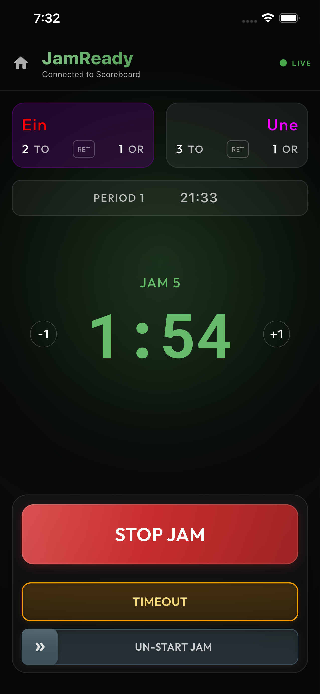

What it is
A simple timer app for roller derby jams, built to be practical during games and practices.
Roller Derby Jam Timer
JamReady is a free app for running roller derby jams with clear timing controls, alerts, and CRG scoreboard-compatible remote sessions.

A simple timer app for roller derby jams, built to be practical during games and practices.
JamReady can be used standalone to run a bout in a fully local mode or connected to a CRG Scoreboard server.
For help, use the support email listed below.
Tap any image to enlarge.
JamReady is an independent project, but is compatible with CRG Derby Scoreboard. The work they've done for the community is greatly appreciated!
JamReady is tested against the following scoreboard versions before releases but may work with other versions.
Thanks to Seattle Derby Brats and Rainier Roller Riot, both 501(c)(3) organizations, for helping test this app. If you are able, please consider making a small donation to support their programs.
Email info@jamready.net with your device model, app version, and a short issue summary.
For support questions, contact info@jamready.net.